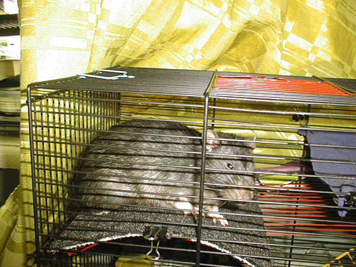
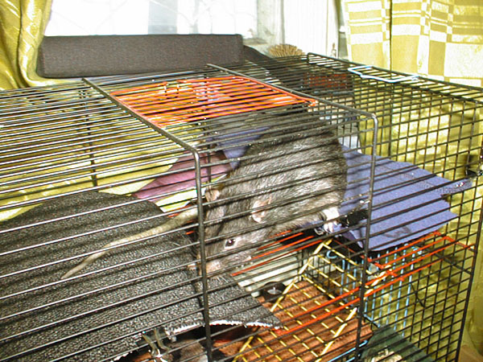
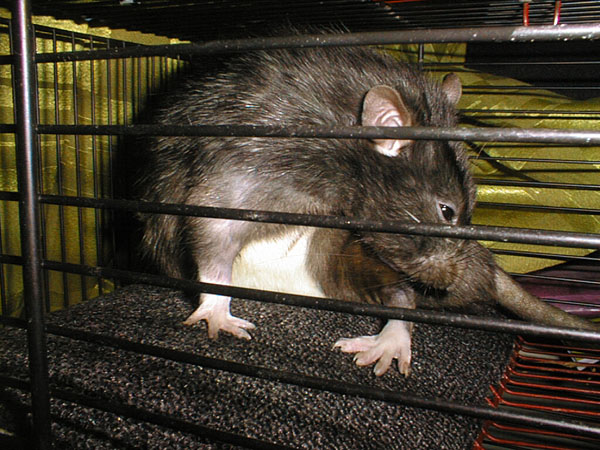
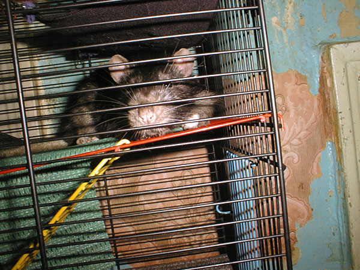

ћулька Ўилохвост
январь 2005

Ч уда бы пойти?
‘евраль 2005

Ч ј у мен€ в клетке Ч ковровое покрытие!

Ч » гамак! Ќет, покрытие! Ќет, гамак! ƒа где же отдохнуть-то?!

Ч Ёто как правильно называетс€ Ч книксен или реверанс?
11 апрел€ 2005

Ч ƒай подремать, а?